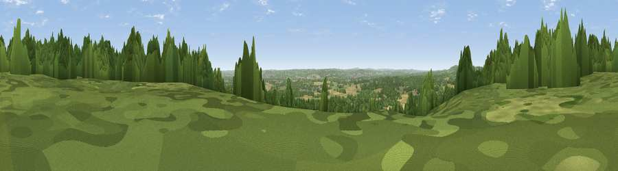

Viewpoint near West Peckham
#28672 in England · top 31% of its area beats it · near West PeckhamThe view, rendered

A 360° render of this exact spot computed from the terrain model, tree cover and land cover — summer colours, afternoon light, calibrated against photographs of famous viewpoints. Real trees, hedges and buildings will differ in detail.
The panorama
Grey silhouette: terrain skyline in each direction (720 bearings, Earth curvature and refraction included). Dashed green: skyline with trees (+15 m) and buildings (+8 m) as obstacles. Blue strip: how far the ground is visible on each bearing.
Where the view opens
Wedge length = distance to the farthest visible ground on that bearing (vegetation-aware). Rings at 10, 25 and 50 km.
What fills the view
53% woodland · 27% grassland · 18% cropland · 2% built-up
Angular shares of the visible panorama (visual magnitude), not map area. Landscape diversity 0.47 (0–1 Shannon).
Key numbers
More beautiful places nearby
The staircase of upgrades: each row has a higher view potential than everything closer. Driving times are estimates from straight-line distance, calibrated against real road routing — check an actual route before setting out.
| Place | Direction | Drive | Score |
|---|---|---|---|
| Viewpoint near West Peckham | E · 1 km | ~4 min | 50.6 |
| Birchetts Hill | ESE · 4 km | ~9 min | 56.3 |
| Viewpoint near Shipbourne | W · 6 km | ~13 min | 69.1 |
| Viewpoint near Westwell | E · 36 km | ~54 min | 72.2 |
| Malling Hill | SSW · 47 km | ~67 min | 73.8 |
| Cliffe Hill | SSW · 47 km | ~67 min | 79.3 |
| Viewpoint near Plumpton | SW · 48 km | ~69 min | 80.4 |
| Viewpoint near Westmeston | SW · 49 km | ~70 min | 80.9 |
51.25444, 0.33479 · source: screening · position refined by local search. Computed location — check access rights before visiting.